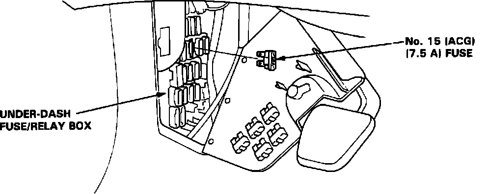

Engine Control Module: Testing and Inspection
Engine/Powertrain Control Module Resetting Fuse:

ENGINE/POWERTRAIN CONTROL MODULE RESET PROCEDURE
1. Turn the ignition switch OFF.
2. Remove the No. 15 fuse from the under dash box for 10 seconds.
NOTE: Disconnecting the No. 15 fuse also cancels the power seat setting, and the radio memory and arms the radio anti-theft. It is recommended that you obtain the anti-theft radio codes and write down them along with the preselected radio station frequencies prior to disconnecting the battery.